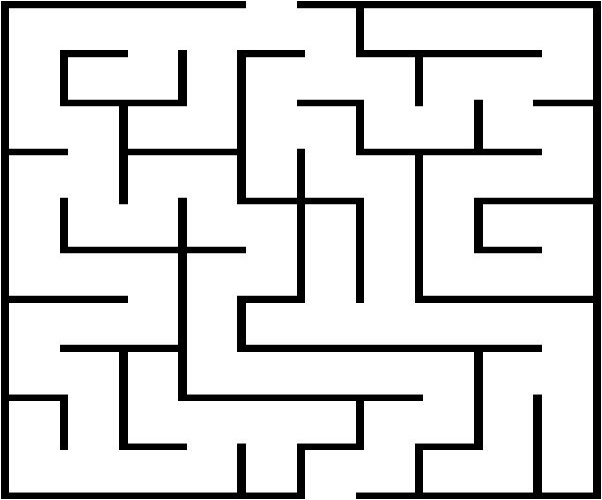
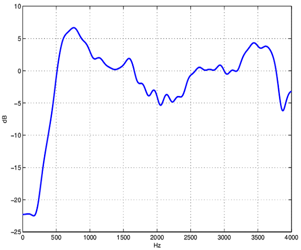

My projects
These projects were realized during my training at EPITECH.
You can find more of my projects on my Github profile.
Dante's Star
Program for generating and solving mazes. This one is able to generate perfect or imperfect mazes. Learn More...
107transfert
A laboratory performs tests on new electronic components to be integrated into its last generation chipset. Those components are entirely characterized by their transfer function, which determines frequency response; this function processes the input frequency and computes an output frequency (caracterizing the way the component amplifies or reduces the input frequency). The goal of the project is to to optimize the transfer function computations. Learn More...